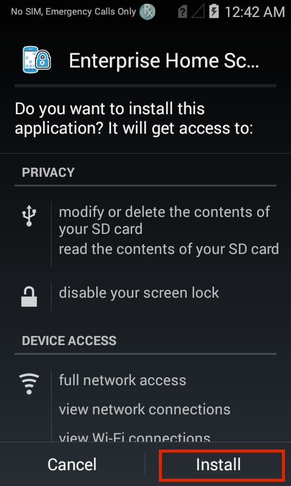
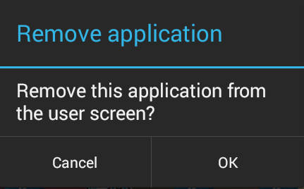
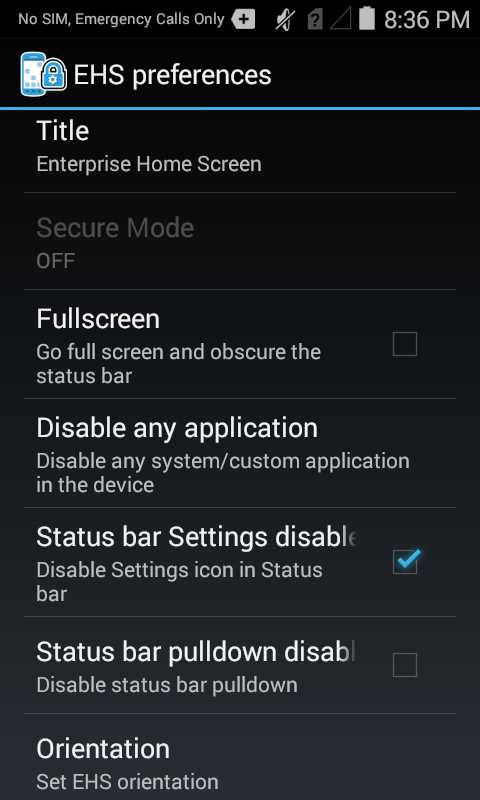
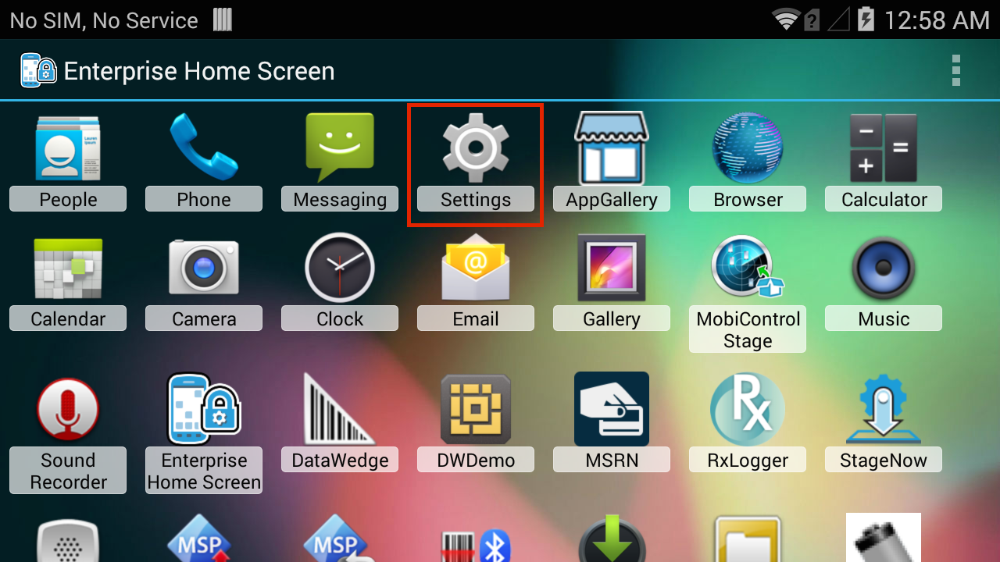
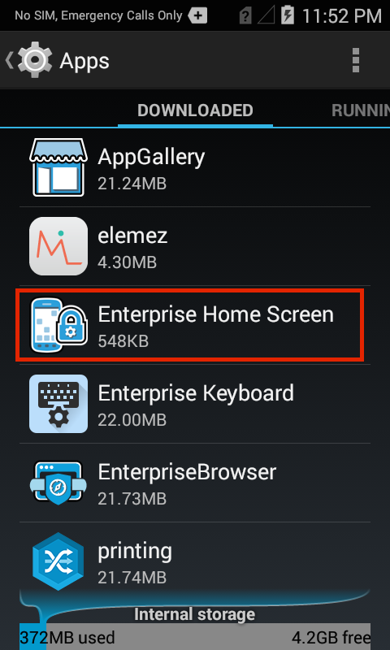
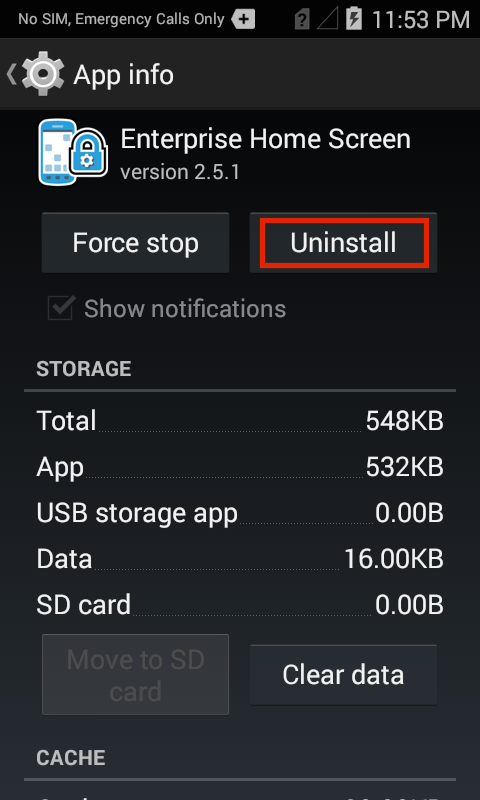
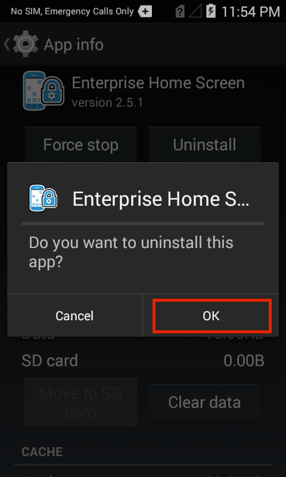
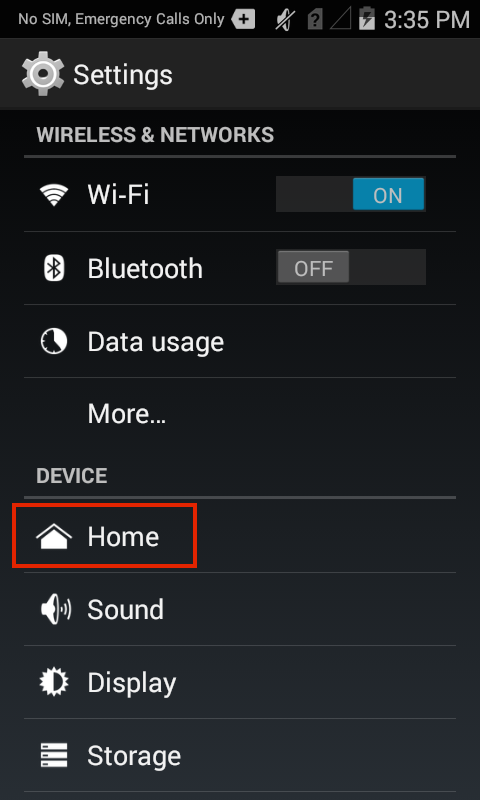
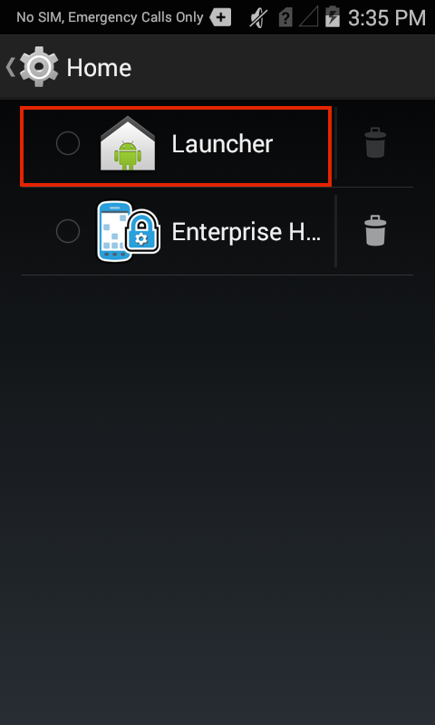
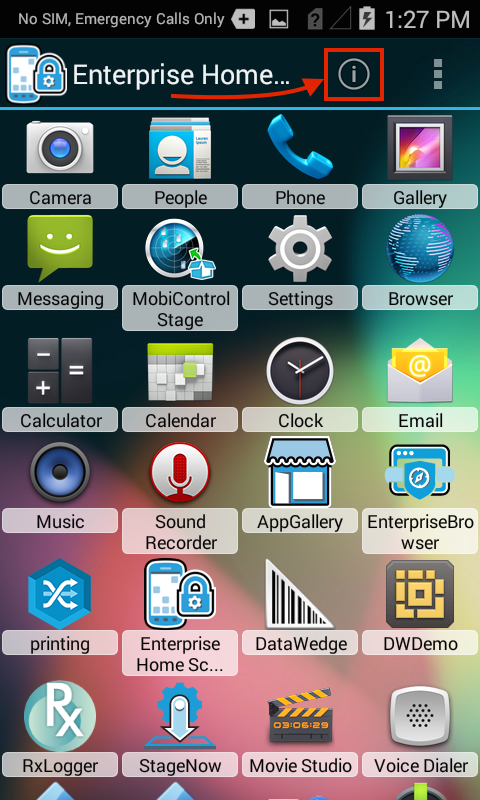

概要
これらの手順により、Enterprise Home Screen のインストール、設定、使用方法、および基本的な操作についての基本を理解できるため、初回の EHS セットアップに慣れていないユーザーにお勧めします。ここで詳述するすべての項目は、Enterprise Mobile Management (EMM) システムを通じて、また EHS 構成ファイルを直接操作することでも自動化できます。内容は、「詳細設定」セクションに記載されています。
EHS の機能の多くは、デバイス上で手動で、EMDK を介してプログラムで、または StageNow またはサードパーティの EMM システム (EMM システムでサポートされている場合) を使用してリモートで行うことができます。EHS は、これらの機能を 1 つの便利なツールにまとめます。
注: インストールとセットアップでは、ターゲット デバイスと通信し、すべてのストレージ領域に書き込むことができる PC または Mac に EHS .apk ファイルが存在する必要があります。必要に応じて EHS をダウンロードし、コンピュータとデバイス間の接続を確立してください。その後で、ここから再開します。デバイスがマルチユーザー モードの場合、SD カード スロットは無効になります。詳細については、「特別な機能」セクションを参照してください。
手動インストール
これらの指示は、EHS 5.x インストーラ (.apk) ファイルを使用した直接インストール (コンピュータから単一デバイスへ) に適用されます。
互換性に関する注意
OS のサポート
- サポートされているデバイスでのみ Android 10 および Android 11 をサポートします。
- Android 10 より前の Android バージョンを実行しているデバイスはサポートされなくなりました。
- EHS 5.0 では、デバイスの互換性のために LifeGuard の更新が必要になる場合があります。詳細はこちら。
アンインストールが必要
パッケージ名の変更
- EHS 5.0 以降のバージョンのパッケージ名は次のとおりです。
- EHS 5.0 (以降) :
com.zebra.mdna.enterprisehomescreen - 以前のすべてのバージョン:
com.symbol.enterprisehomescreen
- EHS 5.0 (以降) :
- 以前の EHS バージョン (古いパッケージ名) は EHS 5.0 にアップグレードできません。
- 5.0 より前の EHS バージョンは アンインストールする必要があります。
Android では、パッケージ名が異なる新しいバージョンへのアプリのアップグレードはサポートされていません。 - EHS をデフォルトのランチャーとして再度指定する必要があります。
- すべての新機能とデバイス サポートは EHS 5.0 (以降) に追加され、新しいパッケージ名で提供されます。
- 以前のバージョンとパッケージ名は廃止予定です。
- 以前の EHS パッケージ名を含むソフトウェア、システム、およびファイル は、新しいパッケージ名で更新する必要があります。
これには以下が含まれますが、これらに限定されません。- Access Manager で作成されたリストなどの「allowlist」または「whitelist」
- Enterprise Home Screen 起動するインテント
- EHS 5.0 より前のバージョンのインストールに使用される StageNow プロファイル
- EHS 5.0 より前のバージョンのインストールに使用される EMM システム
- 文字列
com.symbol.enterprisehomescreenのハードコードされたインスタンス
- 単一の
.apkファイル (EHS_xxxxxx.apk) は、TC20/TC25 を含むすべてのサポート対象デバイスで動作します。
アップグレードに関する注意事項
- EHS 5.x をインストールする前に、以前の EHS インストールを削除する必要があります。
デバイスに EHS 5.0 をインストールする前に、指示に従って EHS をアンインストールしてください。 - 再インストール後は、EHS をデフォルトのランチャーとして指定する必要があります。
- デバイスに保存されている構成設定がある場合は、自動的に再適用されます。
- 工場出荷時の状態にリセットすると、保存されている EHS 設定を含むすべてのデバイス データが消去されます。
- Android 13 に関する重要な注意事項:
- 古い EHS バージョンが事前に削除されていない場合、A13 にアップグレードするとデバイスが使用できなくなる可能性があります。
- アップグレード後、EHS 6.0 (以降) をインストールし、ホーム画面 (ランチャー) として指定します。
EHS を手動でインストールする方法:
1.USB 経由で PC または Mac にデバイスを接続します。
2.PC から任意の書き込み可能なデバイス フォルダに .apk ファイルをコピーします。
3.デバイスで、App Drawer から「ファイル ブラウザ」または「ファイル」アプリを起動します。

4..apk ファイルを探して起動します。
 .apk のファイル名は、インストールされているバージョン番号と一致します。
.apk のファイル名は、インストールされているバージョン番号と一致します。
5.[インストール] をタップします。

6.インストール後、[開く] をタップします。
[開く] ではなく [完了] を誤って選択した場合は、アプリ ドロワから [Enterprise Home Screen] を起動して続行します。
7.ホーム キーをタップするか押します。下の画像のような画面が表示されます。

8.[Enterprise Home Screen] を選択し、現時点では [1 回のみ] をタップします。これにより、セットアップ中に EHS と Android 起動プログラムを簡単に切り替えることができます。この選択は、[常時] を選択して選択が固定されるまで、ホーム キーをタップするたびに表示されます。
9.インストールを完了するには、再起動が必要です (初めて EHS をインストールする場合)。ここでも、上のような画面が表示されます。[Enterprise Home Screen] を選択し、[1 回のみ] をタップして続行するか、[常に] を選択して選択を固定します。この選択を元に戻すには、以下の「デフォルトの起動プログラムの変更」セクションを参照してください。
注: [常に] を選択した後、10 秒間待ってから再起動し、変更が継続していることを確認します。
ユーザー モードにするアプリを選択します
これで EHS を使用する準備が整いました。次の手順では、ユーザー モードで表示するアプリ (および非表示にするアプリ) を選択し、デバイス設定へのユーザー アクセス レベルを設定します。最初に実行すると、EHS は常にデフォルトでユーザー モードに設定され、下の画像のような画面が表示されます。
EHS ユーザー モード 
EHS は、デバイスにインストールされているアプリからユーザー モードで表示するアプリを選択します。使用することを想定しているすべてのアプリを、続行する前にデバイスにインストールしておく必要があります。
管理者モードに入り、ユーザーに表示するアプリを選択します。
10.メニュー アイコンをタップして、[ツール] メニューを開きます。

11.[管理者ログイン] を選択し、[OK] をタップします (デフォルトのパスワードは空白です)。

[OK] を押すと、[ツール] メニューの管理バージョンが表示されます。
12.[戻る] ボタンをタップして、[ツール] メニューを閉じます。下の画像のような管理者モード画面には、デバイスにインストールされているすべてのアプリが表示されます。

注: 使用するアプリが表示されない場合は、先に進む前にインストールする必要があります。
13.アプリのアイコンを長押しすると、ユーザー モード画面で表示と非表示を切り替えることができます。長押ししたときのアプリのステータスに応じて、以下のいずれかのメッセージが表示されます。


目的のアプリが選択されて表示されるまで、この手順を繰り返します。選択を確認するには、[ツール] メニューから管理者モードにログインしてログアウトし、管理者モードとユーザー モードを切り替えます。
設定へのユーザー アクセス
EHS は、デバイスがユーザー モードのときにユーザーが使用できるデバイス設定 (ネットワークなど) とリソース (カメラやファイル システムなど) を広範囲に制御します。管理者は、すべてのデバイス設定を完全に制御、いくつかの設定にアクセスを制限、またはデバイス設定を完全に非表示にできます。
ユーザー モードでは、次の機能はデフォルトで無効になっています。
- USB デバッグ
- ファイル システムへのアクセス
- 検索アプリへのアクセス
- キーガード画面カメラおよび検索機能
- システム設定パネルへのフル アクセス
- 最近使用したアプリ ボタン
デバイスがユーザー モードのときに使用できる設定を選択、または他のユーザー モードの設定を変更するには、次の手順を実行します。
14.管理者モードで、メニューから [ユーザー設定] を選択します。
 設定機能は WS50 デバイスでは使用できません。WS50 の EHS の詳細。
設定機能は WS50 デバイスでは使用できません。WS50 の EHS の詳細。
15.[ユーザー設定] パネルをスクロールして、必要な設定を選択します。



さらにセキュリティを強化する必要があるシナリオでは、EHS はキオスク モードを提供します。キオスク モードについては、「特別な機能」セクションで説明しています。enterprisehomescreen.xml 構成ファイルの使用方法の詳細については、「詳細設定」セクションを参照してください。
自動インストール
これらの手順は、組織独自の EMM サーバーから複数の管理対象デバイスへの EHS、enterprisehomescreen.xml 構成ファイル、またはその両方のリモート インストールに適用されます。または、App Manager 設定タイプ サービスを使用して、Zebra の EMDK または StageNow ツールを介して、リモートでの展開と管理を行うこともできます。
重要: 管理プロファイルが有効になっているデバイスで EHS を実行するには、デバイスで管理プロファイルを設定する前に EHS をインストールする必要があります。
アップグレードに関する注意事項
- EHS 5.x をインストールする前に、以前の EHS インストールを削除する必要があります。
デバイスに EHS 5.0 をインストールする前に、指示に従って EHS をアンインストールしてください。 - 再インストール後は、EHS をデフォルトのランチャーとして指定する必要があります。
- デバイスに保存されている構成設定がある場合は、自動的に再適用されます。
- 工場出荷時の状態にリセットすると、保存されている EHS 設定を含むすべてのデバイス データが消去されます。
- Android 13 に関する重要な注意事項:
- 古い EHS バージョンが事前に削除されていない場合、A13 にアップグレードするとデバイスが使用できなくなる可能性があります。
- アップグレード後、EHS 6.0 (以降) をインストールし、デフォルトのホーム画面 (ランチャー) として指定します。
EMM を使用して EHS をインストールするには、EMM が以下を次の順序で実行するように指示します。
1.必要に応じて、目的のユーザー アプリと設定を含む enterprisehomescreen.xml ファイルを作成します。それ以外の場合、EHS はデフォルト設定でデフォルトのアプリとともにインストールされます。構成ファイルの作成と編集の詳細な手順については、「詳細設定」セクションを参照してください。
2.デバイスに EHS と構成ファイル (ある場合) を展開します。これには、前の手順で作成した .apk ファイルと XML ファイル (存在する場合) が含まれます。
3.以下のパッケージおよびアクティビティ コマンドを使用して、アプリを起動します。
- パッケージ名:
com.zebra.mdna.enterprisehomescreen- メイン アクティビティ/クラス名:
com.zebra.mdna.enterprisehomescreen.HomeScreenActivity
4.デバイスのデフォルトのホーム アプリケーションとして、Enterprise Home Screen を設定します。
5.デバイスを再起動する前に 10 秒の遅延を設定して、変更が継続していることを確認します。
6.デバイスを再起動してインストールを完了します。これは必須の手順です。
[常に] を選択した後、10 秒間待ってから再起動し、変更が継続していることを確認します。
EMM システムの機能はさまざまです。これらのコマンドの設定方法の詳細については、EMM のマニュアルを参照してください。
アプリのインストール、アンインストール、デフォルトの起動プログラムの設定、およびその他の操作は、Zebra の EMDK または StageNow ツールを介して、App Manager を使用して行うことができます。
アンインストール
手動アンインストール
重要: USB デバッグ、システム設定制限 (ユーザーのアクセスを、ディスプレイとサウンド設定および [デバイス情報] パネルのみに制限)、アプリと [最近使用したアプリ] ボタンの無効化など、EHS によって構成されたデバイス設定は、EHS をインストールして構成する前の状態には戻りません。EHS を削除する前に、このような設定をすべて元に戻す必要があります。これは、設定を制限解除するように適切に構成された
enterprisehomescreen.xmlファイルをデバイスにプッシュして、EHS をアンインストールする前に行うことができます。
EHS を削除するには、Android App Manager を使用して EHS アプリをアンインストールします。
1.管理者モード画面から、[設定] を選択します。

2.[アプリ] をタップして Android App Manager を起動します。
3.[Enterprise Home Screen] を探してタップします。
4.[アンインストール] ボタンをタップします。 [アンインストール] ボタンがグレーの場合は、最初に EHS をデフォルトの起動プログラムとして削除します。
5.[OK] をクリックして確定します。
構成ファイルの削除 (オプション)
上記の手順では、/enterprise/usr フォルダから enterprisehomescreen.xml 構成ファイル削除せず、後でインストールした EHS バージョンの動作に影響を与える可能性があります。
古いバージョンの enterprisehomescreen.xml ファイルを削除するには:
6.Android Debug Bridge (ADB) がインストールされているコンピュータにデバイスを接続します。
7.コマンド プロンプトで、次のコマンドを実行します。
adb shell rm /enterprise/usr/enterprisehomescreen.xml
これで、EHS の手動アンインストールが完了しました。
自動アンインストール
これらの手順は、組織独自の EMM サーバーを使用して複数の管理対象デバイスから EHS を削除するリモート アンインストールに適用されます。このタスクは、Zebra の EMDK または StageNow ツールを介して、App Manager サービスを使用して実行することもできます。
重要: USB デバッグ、システム設定制限 (ユーザーのアクセスを、ディスプレイとサウンド設定および [デバイス情報] パネルのみに制限)、[アプリと最近使用したアプリ] ボタンの無効化など、EHS によって構成されたデバイス設定は、EHS をアンインストールしても、以前の状態に戻りません。デバイスを以前の状態に戻すには、EHS を削除する前に、このような設定をすべて元に戻す必要があります。これは、設定を制限解除するように適切に構成された
enterprisehomescreen.xmlファイルをデバイスにプッシュして、EHS をアンインストールする前に行うことができます。
EMM を使用して EHS をアンインストールするには、EMM に次の手順を実行するよう指示します。
1.以下に示すパッケージ名とアクティビティ名を参照して、EHS アプリをアンインストール (削除)します。
- パッケージ名:
com.zebra.mdna.enterprisehomescreen- メイン アクティビティ/クラス名:
com.zebra.mdna.enterprisehomescreen.HomeScreenActivity
2.オプション: 新しい enterprisehomescreen.xml 構成ファイルを新しいバージョンの EHS で展開する場合は、手順 3 に進みます。それ以外の場合は、ファイル /enterprise/usr/enterprisehomescreen.xml をデバイスから削除するように EMM に指示します。これにより、以前にインストールされた EHS アプリから構成設定がクリアされます。
警告:
/enterprise/usrフォルダを削除しないでください。他のアプリの動作に影響を与える可能性があります。
3.アンインストールを完了するには、デバイスを再起動する必要がある場合があります。
これで、EHS のリモート アンインストールが完了しました。
EMM システムの機能はさまざまです。コマンドの使用方法の具体的な情報については、EMM のマニュアルを参照してください。
デフォルトの起動プログラムを変更する
デバイスのデフォルトの起動プログラムとして EHS を削除するには、[設定] パネルで変更を加えるか、EHS をアンインストールします。これらのシナリオのいずれも、デバイス上で手動で、EMDK を介してプログラムで、または StageNow または EMM (サポートされている場合) を使用してリモートで実行することもできます。
EHS がデバイスから削除され、デバイス上で唯一の残っている起動プログラムが Android 起動プログラムである場合、それがデフォルトの起動プログラムになります。EHS を削除した後も複数の起動プログラムがデバイスに残っている場合は、目的の動作を確保するために、新しいデフォルトの起動プログラムを選択する必要があります。
EHS を削除せずにデバイスのデフォルト起動プログラムを手動で変更する方法:
1.管理者モードで [設定] パネルを開き、[ホーム] をタップします。
2.Android 起動プログラムをタップして、デフォルトの起動プログラムおよびホーム画面として選択します。

ここに表示されているごみ箱アイコンは、EHS のアンインストールと Android 起動プログラムの復元の代替手段となります。
バッテリと Wi-Fi クイック ビュー
EHS では、管理者モードおよびユーザー モード起動プログラム画面のメニューに表示されるバッテリおよび Wi-Fi ステータスを表示するための独立したパネルに加えて、これらの重要なデバイスのリアルタイム ステータスに 1 つの画面からアクセスするための代替手段であるクイック ビューが利用できます。
EHS 4.0 以降では、管理者が Wi-Fi 情報の表示を制御できます。
バッテリと Wi-Fi ステータスを表示する方法:
管理者モードまたはユーザー モードで、下に示す [i] アイコンをタップします。
[バッテリ]/[Wi-Fi クイック ビュー] パネルが表示され、両方のデバイスのステータスがリアルタイムで表示されます。
WS50 デバイスでは、バッテリと Wi-Fi クイック ビューは使用できません。WS50 の EHS の詳細。